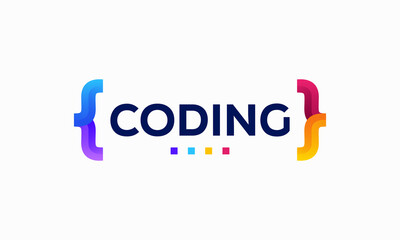
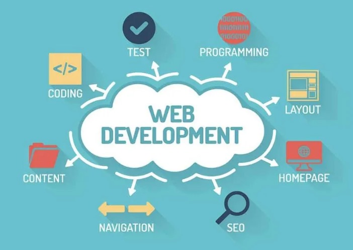
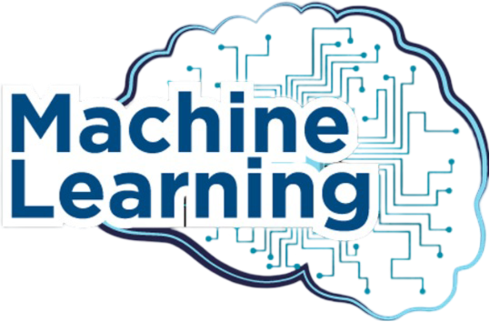

I hold a broad passion for various fields within Computer Science, although I am currently in the learning
stages of some of them.
-
Coding

I am interested in coding. My strongest programming language is Java. This interest in coding helps me
in exploring more about data structures. I've also completed a course on algorithm design and analysis,
which has further fueled my interest in this area.
-
Web development

I have a keen interest in designing web pages and I have completed a Java FullStack course under IAMNEO.
Throughout the Java FullStack course at IAMNEO, I delved into a wide range of topics including Java programming,
front-end development with HTML, CSS, and JavaScript, as well as back-end development using frameworks like
Spring Boot. Additionally, I gained proficiency in database management, version control systems, and deployment
strategies.
-
AWS

I have recently achieved the AWS Solutions Architect Associate certification and completed an intensive course
with Ethnus. This course has significantly enhanced my practical knowledge and skills in AWS Architecting.
Through hands-on experience and comprehensive learning modules, I have gained a deeper understanding of AWS
services, architecture best practices, and the implementation of scalable and cost-effective solutions in the
AWS cloud environment.
-
Machine Learning

I am actively exploring the field of Machine Learning, focusing on various algorithms and their practical applications.
I have completed courses on supervised and unsupervised learning techniques, including regression, classification, and clustering.
This has provided me with hands-on experience with popular ML frameworks and libraries, as well as the ability to build
and evaluate predictive models.